CLI-Anything이 하는 일
AI에게 글이나 코드를 맡기는 건 이제 익숙해요. 그런데 디자인 앱이나 문서 앱 안으로 들어가 작업까지 시키려면 이야기가 달라져요. 사람은 메뉴와 버튼을 보며 일하는데, 자동화가 그 화면에만 기대면 창 위치가 바뀌거나 대화상자 하나만 떠도 흐름이 끊길 수 있어요.
그래서 영상은 다른 길을 보여 줘요. CLI(Command-Line Interface)는 버튼 대신 정해진 명령과 값을 넘겨서 프로그램에 일을 시키는 방식이에요. CLI-Anything은 앱 기능을 이런 명령으로 다룰 수 있게 만드는 공개 프로젝트예요. 화면 아래쪽에 저장소 주소 github.com/HKUDS/CLI-Anything가 보이고, 목록에는 blender/agent-harness처럼 앱 이름마다 폴더가 하나씩 있어요.
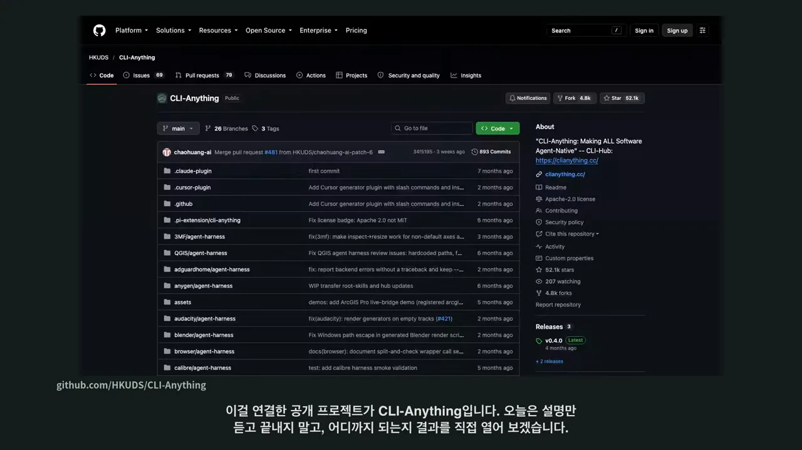
흐름은 네 칸 슬라이드 한 장으로 정리돼요. 왼쪽부터 '수량을 늘려 줘' 같은 수정 요청, 그 요청을 명령으로 바꾸는 AI와 CLI-Anything, 실제로 계산·편집·렌더를 하는 앱 엔진, 그리고 다시 열고 고칠 수 있는 결과 파일이에요. AI는 명령을 고를 뿐이고, 일은 앱이 자기 방식대로 처리해요.
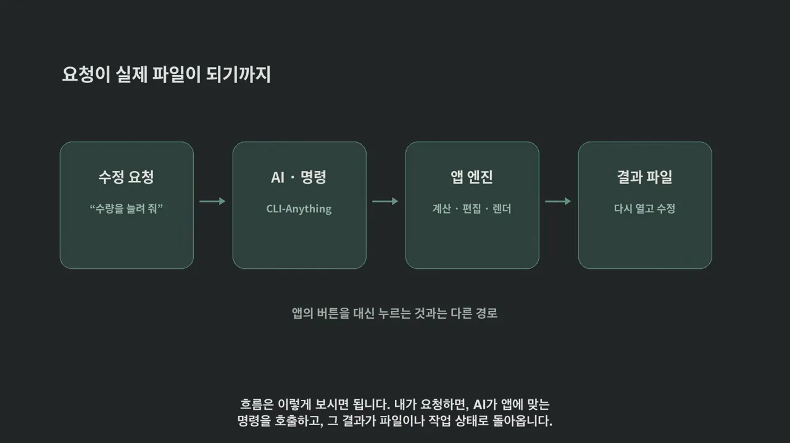
모든 앱이 저절로 되진 않아요
영상이 먼저 선을 긋는 부분이 있어요. 앱마다 준비된 명령이 다르고, 없는 기능은 따로 연결해야 해요. 이번에는 공개 저장소에 들어 있는 Inkscape, LibreOffice, Blender용 도구를 실제로 설치했어요. 명령 도구만 깔았다고 디자인·문서·렌더링 엔진이 생기지는 않아서 앱 본체도 함께 설치했어요.
설치한 뒤 처음 한 일은 도움말 보기예요. cli-anything-inkscape --help를 치면 document, shape, text, export처럼 명령이 묶음별로 나와요. 위쪽 옵션에는 결과를 JSON(JavaScript Object Notation)으로 받는 --json, 바꿀 때마다 저장하는 --save, 실제로 저장하지 않고 돌려 보는 --dry-run이 있어요.
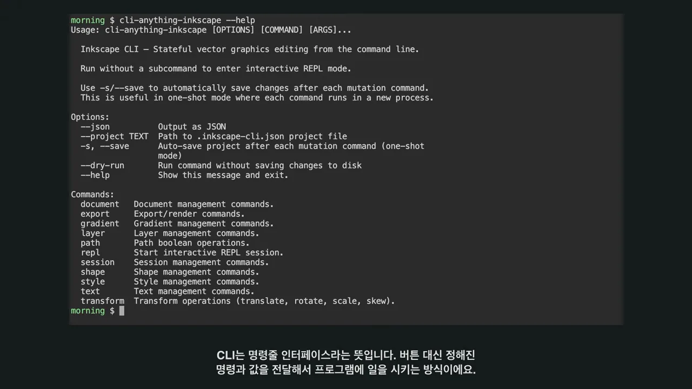
예제는 작은 커피 브랜드 'MORNING ROUTINE'이에요. 앱 셋에 역할을 하나씩 나눴어요.
| 앱 | 맡은 일 | 남는 파일 | 확인한 것 |
|---|---|---|---|
| Inkscape | 세로 오픈 포스터 | SVG(Scalable Vector Graphics), PDF(Portable Document Format) | Inkscape에서 열었을 때 페이지가 온전한지 |
| LibreOffice | 원두·종이컵·기프트 카드 견적서 | xlsx, PDF | 수식과 합계가 살아 있는지 |
| Blender | 커피 컵과 원두 봉투 3D 장면 | PNG(Portable Network Graphics) 렌더, Blender 프로젝트 | 앱에서 다시 열어 다른 각도로 볼 수 있는지 |
세 작업을 하나의 일로 묶은 이유가 있어요. 앱이 켜지는지보다 중요한 것, 곧 수정 요청이 실제 결과물에 반영되는지를 볼 수 있어서예요.
Inkscape로 포스터 만들기
Inkscape는 벡터 이미지를 편집하는 앱이에요. 여기서는 커피 브랜드의 세로 포스터를 만들어요. 화면에 빠르게 지나가는 건 실제로 실행한 명령이에요. 첫 명령은 paper라는 이름으로 1080×1350 크기의 크림색 사각형을 깔고, 다음 명령은 그 안쪽에 모서리가 둥근 짙은 초록 사각형 dark를 얹어요. 위치(-x, -y), 크기(-w, -h), 색(fill)이 전부 값으로 들어가요.
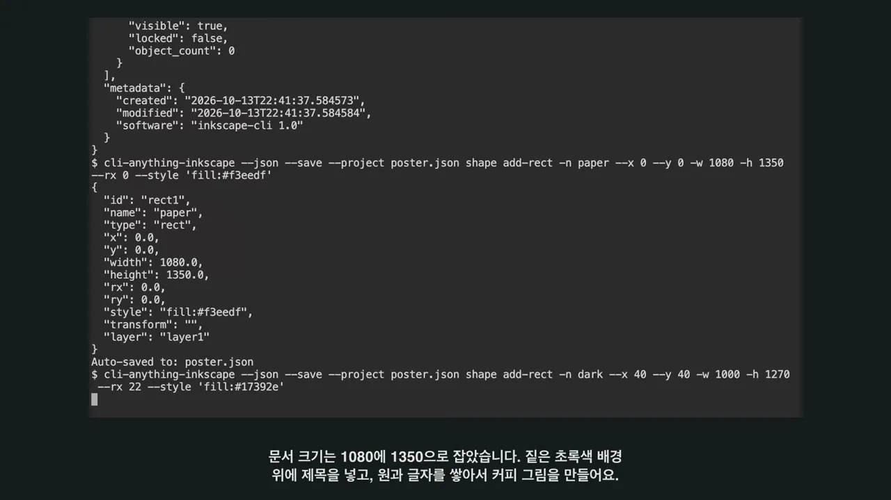
같은 방식으로 원과 글자를 겹쳐 커피 잔을 그리고, 마지막에 export svg와 export pdf로 내보내요. 화면 아래쪽에는 실제 inkscape 명령으로 PNG까지 뽑는 줄도 보여요. SVG는 글자와 도형을 나중에 다시 고칠 수 있는 형식이라, 결과가 한 장짜리 그림으로 굳지 않아요.
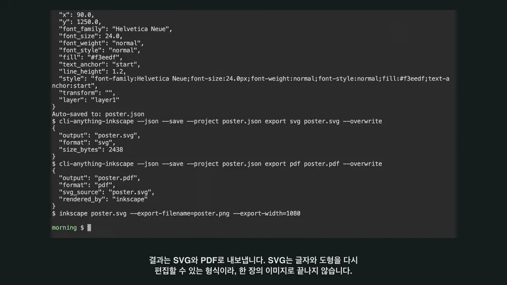
만든 파일을 원래 Inkscape 앱에서 열었어요. 위에 'MORNING ROUTINE.' 제목, 가운데 커피 잔, 아래에 'COFFEE, SLOWLY.'와 영업시간 'OPEN 08:00 — 18:00'이 들어가 있고, 전체 페이지가 잘리지 않았어요.
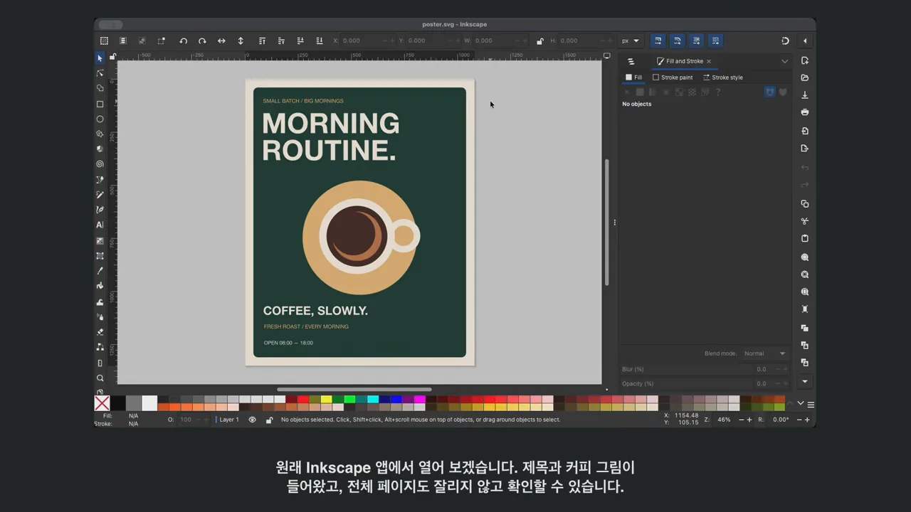
이 방식이 편한 곳은 반복 작업이에요. 비슷한 포스터를 여러 장 만들 때 문구나 색 같은 값만 바꾸는 흐름을 정리해 둘 수 있어요. 다만 명령이 디자인 감각까지 대신하진 않아요. 여백, 글자 크기, 색 조합은 결과를 보면서 사람이 판단해야 해요.
LibreOffice로 견적서 계산하기
두 번째는 LibreOffice예요. 이번엔 그림이 아니라 계산이 맞아야 해요. 원두, 종이컵, 기프트 카드 세 품목의 견적서에 품목·단위·수량·단가·금액을 넣었어요. 금액 칸에는 숫자를 적지 않고 수량과 단가를 곱하는 수식을 넣었어요. Calc에서 원두 금액 칸(E3)을 고르면 수식 입력줄에 =C3*D3가 보여요.
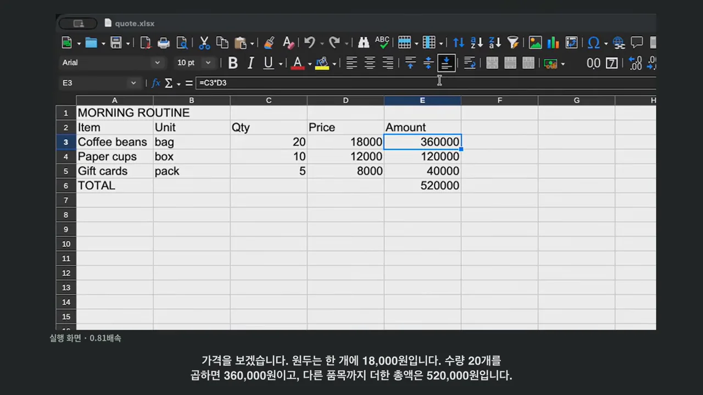
숫자를 맞춰 보면 원두는 18,000원 × 20개 = 360,000원, 종이컵은 12,000원 × 10개 = 120,000원, 기프트 카드는 8,000원 × 5개 = 40,000원이에요. 세 금액을 더한 총액이 520,000원이에요.
처음엔 수식이 안 읽혔어요
처음 실행에서는 오류가 났어요. 파일에 '이 식은 어떤 수식 형식인지' 알려 주는 선언이 빠져서, LibreOffice가 계산식을 제대로 읽지 못했어요. 화면의 패치를 보면 odf_utils.py에 두 줄이 더해져요. 문서 종류가 calc일 때만 xmlns:of라는 네임스페이스를 붙이는 내용이에요.
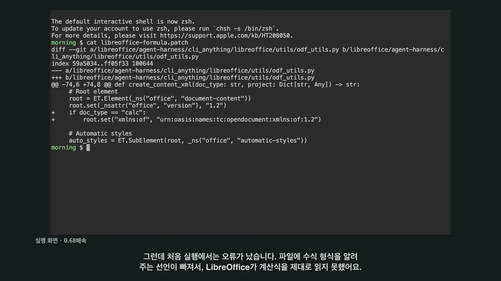
패치 후 다시 내보내니 계산이 맞았어요. Calc에서 열 때도 셀 값만 보지 않고, 합계 칸(E6)에 =SUM(E3:E5)가 들어 있는지까지 확인했어요.
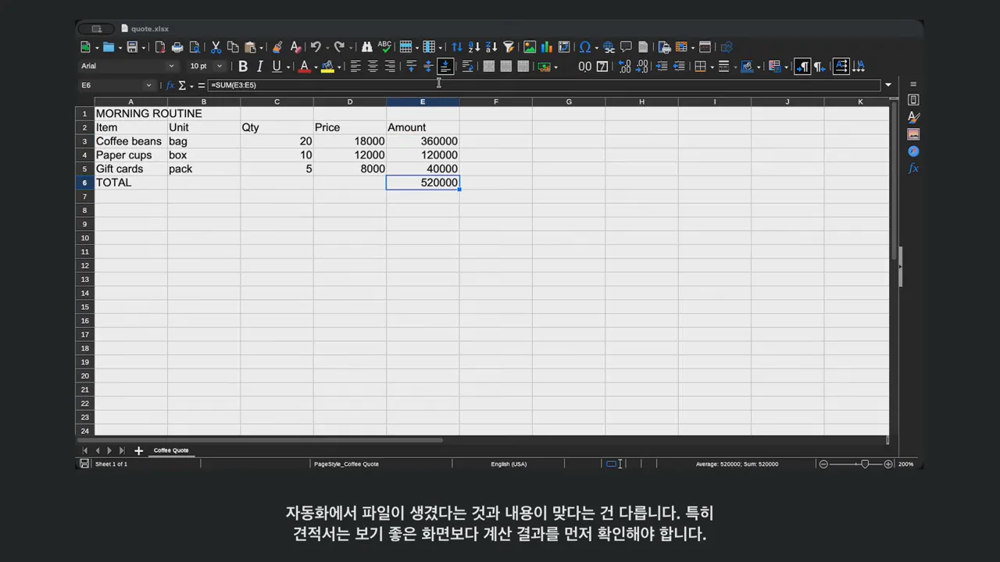
요청 한 번으로 두 파일 고치기
이제 두 작업을 한 번에 바꿔요. 포스터는 저녁 버전으로, 원두 수량은 20개에서 30개로 늘려 달라는 요청이에요. 이번엔 실행 예제가 아니라 Claude Code에 자연어로 요청을 넘겼어요. 화면의 request.txt를 보면 요청이 세 덩어리로 나뉘어 있어요.
- 포스터 —
poster.json을 복사해서cli-anything-inkscape --save명령만으로 headline 텍스트를 'MORNING'에서 'EVENING'으로, dark 사각형 색을#40261d로 바꾸고 SVG·PDF로 내보내요. - 견적서 —
quote.json을 복사해서cli-anything-libreoffice명령으로 C3 수량을 20에서 30으로 바꾸고, 나머지 수식은 그대로 둔 채 xlsx·PDF로 내보내요. - 마무리 — 결과를 짧게 설명하고 끝났다는 표시 파일을 남겨요.
그 아래 문장들이 범위를 정해요. 현재 폴더와 출력 파일만 건드리고, 파일 내용을 직접 다시 만들지 말고 설치된 명령을 쓰고, 명령이 낯설면 --help부터 보라고 해요. 텍스트와 도형의 실제 번호도 먼저 목록(list)으로 확인하게 했어요. AI가 모르는 명령을 상상해서 쓰지 않게 하려는 장치예요.
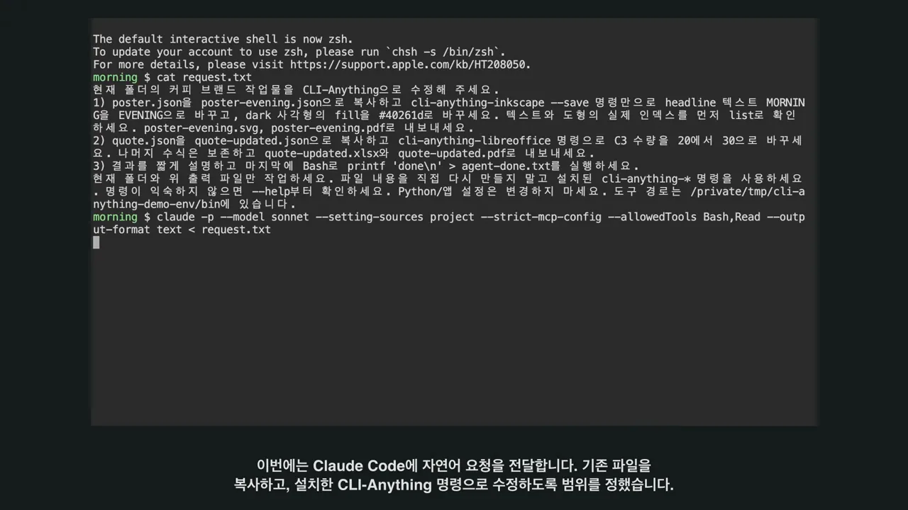
실행 결과가 돌아왔어요. 보고를 읽어 보면 AI가 요청 순서대로 움직였어요. text list와 shape list로 headline이 3번, dark 사각형이 1번이라는 걸 먼저 확인했고, 목록에 찍힌 순번과 실제 번호가 다르다는 것도 알아채서 실제 번호 쪽을 썼어요. 견적서는 calc set-cell로 C3만 30으로 바꿨고, C3*D3와 SUM(E3:E5) 같은 수식이 그대로 남아 있다고 적었어요.
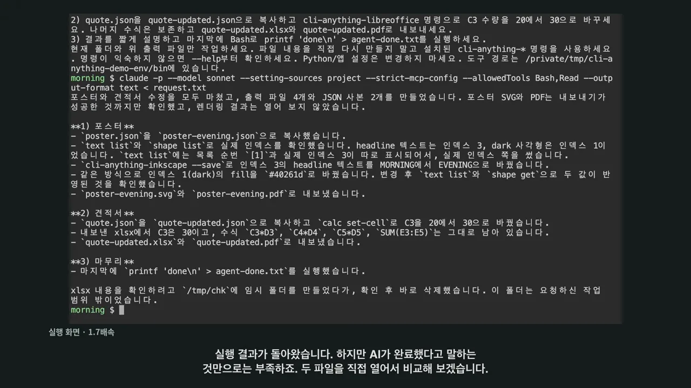
그래도 AI가 '완료했다'고 말하는 것만으로는 부족해요. 그래서 두 파일을 직접 열었어요. 포스터 제목은 'MORNING'에서 'EVENING'으로, 배경은 짙은 초록에서 커피를 떠올리게 하는 갈색으로 바뀌었어요. 잔 그림과 아래 문구는 그대로예요.
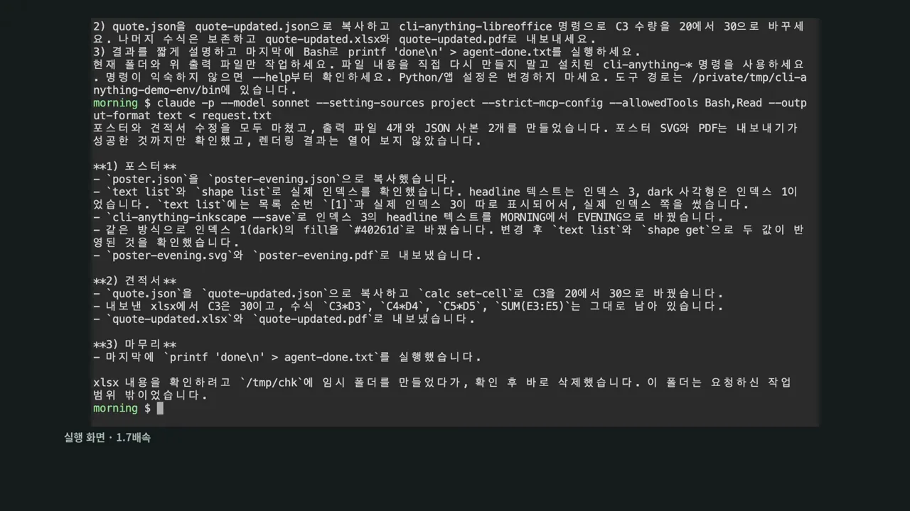
견적서도 열어 봤어요. 원두 수량(C3)이 30이 되면서 원두 금액은 540,000원, 합계는 700,000원이 됐어요.
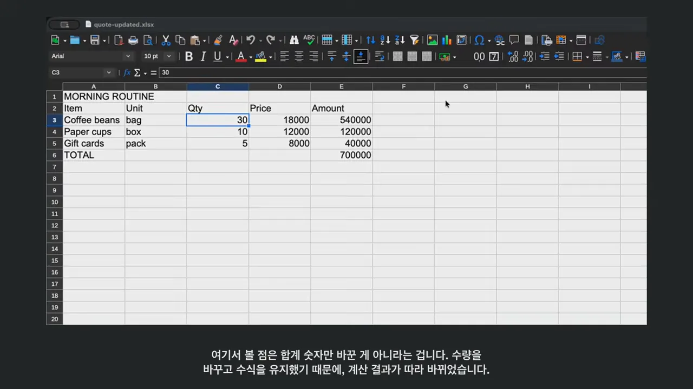
여기서 볼 점은 합계 숫자를 고친 게 아니라는 거예요. AI가 바꾼 건 수량 한 칸이고, 금액과 합계 칸에는 수식이 살아 있어서 계산이 따라 바뀌었어요. 아래 그림은 그 연쇄를 수정 전과 후로 나란히 놓은 거예요.
같은 요청 안에서 포스터와 문서가 서로 다른 도구로 고쳐졌어요. 영상은 이렇게 반복 수정을 한데 묶는 게 이번 실험에서 가장 실용적인 부분이었다고 봐요.
Blender로 제품 장면 렌더하기
마지막은 Blender예요. 포스터와 어울리는 커피 컵과 원두 봉투를 3D 장면으로 만들어요. 컵 몸통, 테두리, 손잡이, 받침, 봉투를 따로 배치하고 재질, 카메라, 조명을 붙였어요. 장면 속 물체는 모두 12개예요. 뷰포트를 보면 초록 원판 위에 살구색 받침, 그 위에 컵이 있고 뒤에 봉투가 서 있어요. 색이 비슷해 보여도 컵, 커피, 받침은 서로 다른 재질로 다뤄요.
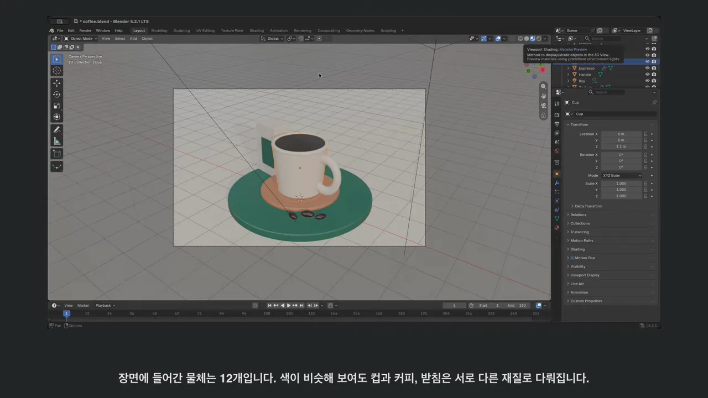
렌더는 두 단계예요
이 도구의 렌더 명령은 바로 그림을 만들지 않아요. 먼저 render settings로 엔진(CYCLES), 해상도(1600×1000), 샘플 수(32)를 정해요. 그다음 render execute를 부르면 Blender에서 돌릴 스크립트(_render_script.py)를 만들고, 실행할 명령까지 돌려줘요. 화면 맨 아래 줄이 그 명령으로 실제 Blender를 띄우는 장면이에요.
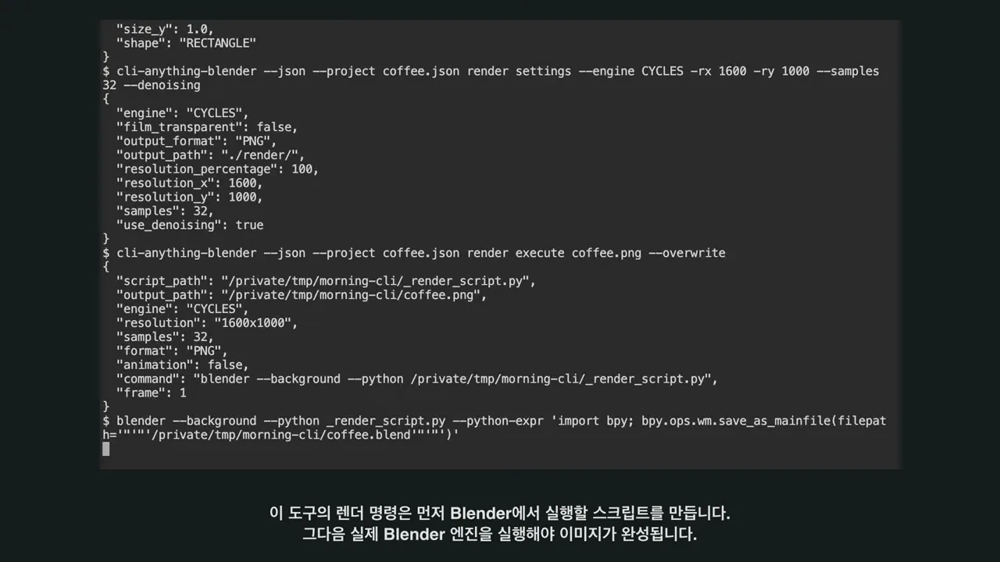
flowchart LR A["render settings
엔진·해상도·샘플"] --> B["render execute
스크립트 생성"] B --> C["blender --background
실제 엔진 실행"] C --> D["coffee.png
렌더 이미지"] C --> E["coffee.blend
프로젝트 파일"]
엔진이 도는 화면 위쪽에 Blender 5.2.1 LTS, Saved "coffee.blend", Saved: …/coffee.png가 찍혀요. 이미지 생성 모델이 커피 사진을 그리는 게 아니라, 장면 속 물체와 빛을 Blender가 계산하고 있다는 증거예요. 아래 줄줄이 나오는 건 앞으로 바뀔 기능에 대한 경고(DeprecationWarning)라 결과에는 영향이 없어요.
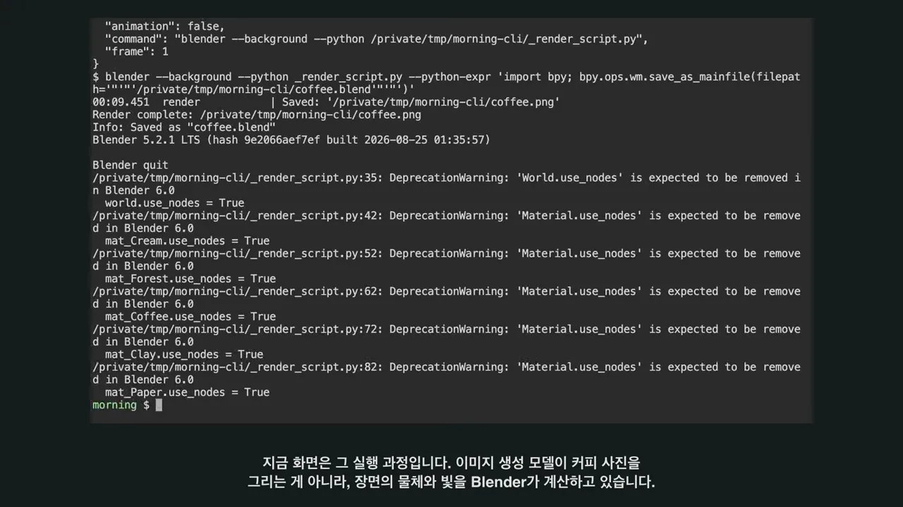
렌더 결과예요. 컵 표면에 빛이 반사되고, 받침과 원두 아래에 그림자가 생겼어요. 영상은 손잡이의 각진 부분처럼 다듬을 곳도 보인다고 솔직하게 짚어요.
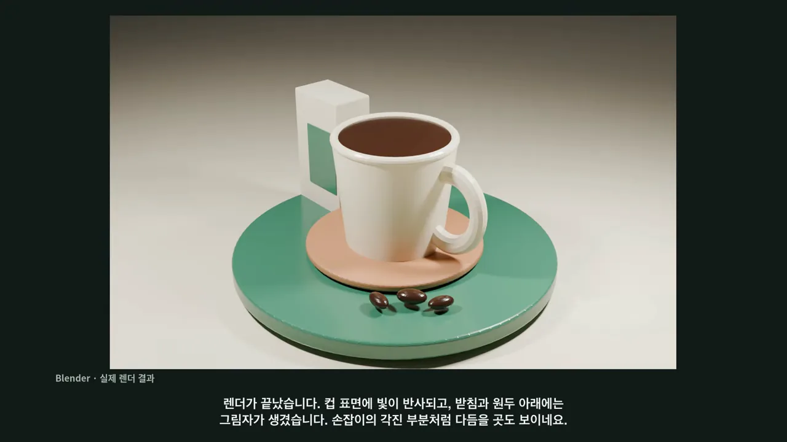
완성 이미지만 남은 게 아니에요. Blender 프로젝트도 저장했기 때문에, 앱에서 물체를 골라 위에서 내려다보는 식으로 다른 각도에서 장면을 볼 수 있어요. 위에서 보면 원판, 받침, 컵이 한가운데 겹쳐 있고 바깥쪽에 카메라와 조명 표시가 떨어져 있어요.
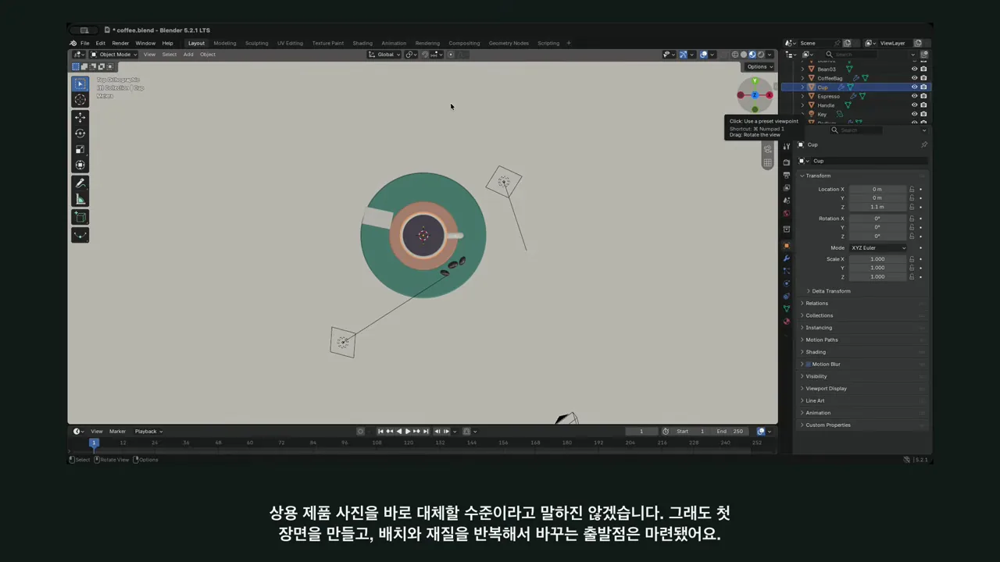
영상은 이걸 상용 제품 사진을 바로 대신할 수준이라고 하진 않아요. 그래도 첫 장면을 만들고 배치와 재질을 반복해서 바꿀 출발점은 마련됐다고 봐요.
어디에 쓰면 좋을까요?
세 결과에는 공통점이 있어요. AI가 요청을 받아 앱이 알아듣는 명령으로 바꾸고, 실제 파일로 결과를 돌려줬어요. 영상이 정리한 '잘 맞는 곳'과 '조심할 곳'은 이래요.
| 구분 | 영상이 든 예 |
|---|---|
| 효과가 큰 일 | 포스터 문구 바꾸기, 견적 수량 갱신, 비슷한 제품 장면 여러 개 준비하기처럼 반복이 많은 작업 |
| 막힐 수 있는 일 | 처음부터 모든 기능을 자유롭게 쓰려는 기대. 이번에도 수식 문제를 고쳤고, 렌더 실행 방식을 따로 확인해야 했어요 |
| 확인하지 않은 것 | 다른 방식보다 몇 배 싸다거나 무조건 빠르다는 비교. 이번엔 측정하지 않았어요 |
마지막 줄이 중요해요. 영상이 확인한 건 포스터, 견적서, 제품 장면이 실제로 만들어지고 고쳐졌다는 점까지예요. 비용이나 속도는 말하지 않았어요.
처음 써 본다면
- 자주 하는 작업 하나를 골라요 — 포스터 문구 교체처럼 반복되는 일이 좋아요.
- 입력을 작게 정해요 — 바꿀 값과 쓸 명령의 범위를 요청에 적어 둬요.
- 결과 파일을 원래 앱에서 다시 열어요 — AI의 '완료' 보고 대신 파일 자체를 확인해요. 포스터는 글자와 색이, 견적서는 수식과 합계가 기대대로 들어 있어요
설명에서 끝나는 AI가 아니라, 내가 수정해서 이어 쓸 수 있는 결과물을 남기는 흐름이요.
— 영상 07:21